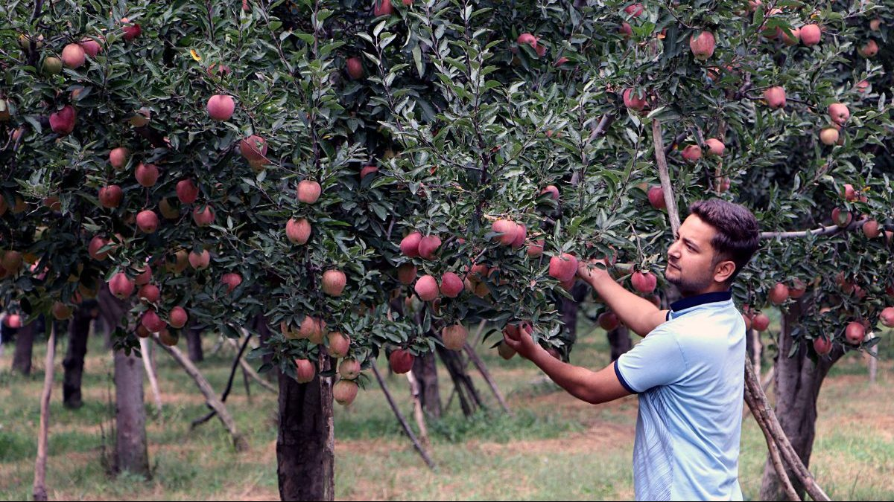

my name is salisu abubakar, i am going to university, i am studying civil or software engineering i love operating computer i love studying my books, i did my waec in ss2, i did my jamb to in ss2 my jamb score was 203, my addmition was delayed my mom is planing to send me to government or private scchool, i was told to study civil or software engineering, but my mom told me to study software in minna if my addmition of keffi diid not come out, but i want study one of them and if i grow up i want to open my company, but in software, civil, robotics and automobile so is really hard for me to chose but i leave everythin in God hands, because only he knows what good for us, may god bless me amen.
